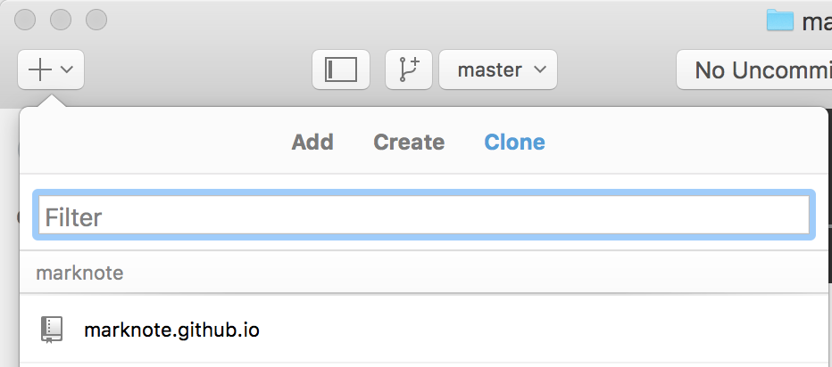
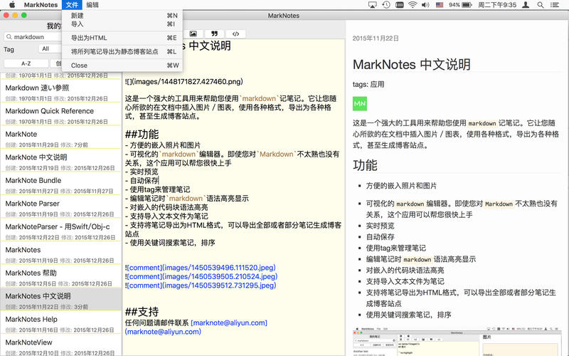

MarkNotes－不折腾，玩转GitHub博客
tags:应用
利益声明： 本人是下面提到的MarkNotes应用的开发者。这是一款收费应用。本文存在毛遂自荐的广告嫌疑。不喜者请无视。
由来
最初的时候我开发了iOS上的应用MarkNote，其定位是一个笔记应用。我喜欢EverNote，但是EverNote越拉越复杂，同时笔记需要联网，在iPhone上用起来很不方便。而且我喜欢markdown，希望可以直接用markdown记笔记。于是就开发了这个应用。
在marknote开发出来之后，才发现应用的开发只是开始，让别人知道你的应用是一件很难的事情。于是开始找各种宣传的方式，包括写博客。
开始写博客之后，才发现整起来麻烦。同时也发现这是一个机会。于是我将MarkNote移植到Mac上，并增加了将笔记导出为博客的功能。
目前我自己的博客https://marknote.github.io/ 都是采用MarkNotes生成。我发表到jianshu的所有文章（包括正在写的这篇），也都是在MarkNotes上编辑的。简书的编辑器对makrdown有很好的支持，但是我希望自己能随时随地记录想法，还想一稿多投，所以一直都用MarkNotes。
使用
前提
你需要了解一点git的使用，这个其实很简单，尤其是用github desktop，能极大的降低操作的难度。
如果你了解一点markdown语法，那是最好的。MarkNotes本身对绝大部分常用标记提供了可视化支持。
在github上开通pages
首先你需要一个github账号。如果没有的话，你需要去这里注册一个。然后，你需要创建一个仓库(repository)。这个仓库的名字必须是
{你的用户名}.github.io的格式。比如我的博客其仓库名为:marknote.github.io创建完仓库后，可以用github desktop将这个仓库clone下来。
如果你没有这个工具的话，可以在这里 下载。
在github desktop中选File ->Clone Repository你应该可以看到刚才你建的Repository

选择一个本地目录，点击Clone即可将它clone到本地。
然后你就可以在本地写博客了。你当人可以选择手工写HTML，也可以折腾Hexo，Jkell之类的。不过我选择使用MarkNotes。
导出笔记为博客站点
1. 配置首先你需要做一些简单配置。 这个配置只需要做一次。
在左边的搜索框中, 输入
settings, 你可以找到一篇名为 settings的笔记。点击选中这篇笔记，找到下面的值，修改成泥需要的配置。
| 配置项 | 功能描述 |
|---|---|
| SiteName | 你站点的名字 |
| Base URL | 你站点的名字的 URL，用于 sitemap。 可选。 |
| SiteDesc | 你对自己站点的描述。会显示在页面底部。 |
| github-user | 你的github用户名, 可选 |
| twitter-user | 你的twitter用户名, 可选 |
2. 过滤需要导出的笔记
默认情况下, 所有的笔记都会导出。如果只想导出部分笔记的话，你可以在搜索框和Tag 下拉框中输入值来对笔记进行过滤。
3. 导出
现在你可以导出所有选中的笔记。选择菜单项“文件”—>“将所列笔记导出为静态博客站点"。
快捷键是苹果键+L。

上传笔记到github
首先将导出的笔记拷贝到你的repository的本地目录（注意，不需要拷贝Notes目录，只需要拷贝Notes目录下的所有文件和文件夹。）在导出时MarkNotes会在目标目录创建一个Notes文件夹，所有的笔记生成到这个文件夹下。这样做是为了防止不小心覆盖了你的文件。然后，在github desktop中
commit再点一个Sync，几分钟后在浏览器中访问你自己的博客站点https://{你的用户名}.github.io就可以看到自己的博客了。